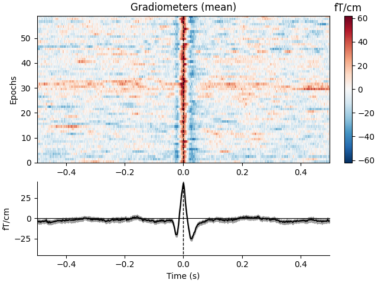
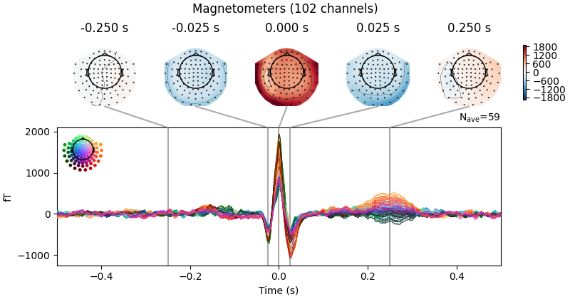
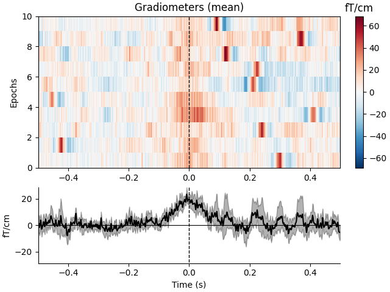
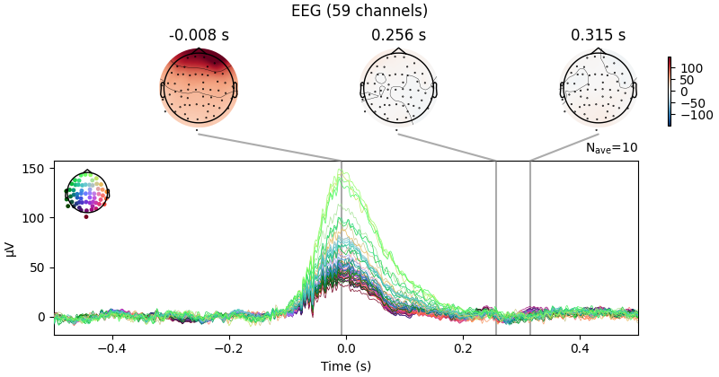

Note
Go to the end to download the full example code
Overview of artifact detection#
This tutorial covers the basics of artifact detection, and introduces the artifact detection tools available in MNE-Python.
We begin as always by importing the necessary Python modules and loading some example data:
import os
import numpy as np
import mne
sample_data_folder = mne.datasets.sample.data_path()
sample_data_raw_file = os.path.join(sample_data_folder, 'MEG', 'sample',
'sample_audvis_raw.fif')
raw = mne.io.read_raw_fif(sample_data_raw_file)
raw.crop(0, 60).load_data() # just use a fraction of data for speed here
Opening raw data file /home/circleci/mne_data/MNE-sample-data/MEG/sample/sample_audvis_raw.fif...
Read a total of 3 projection items:
PCA-v1 (1 x 102) idle
PCA-v2 (1 x 102) idle
PCA-v3 (1 x 102) idle
Range : 25800 ... 192599 = 42.956 ... 320.670 secs
Ready.
Reading 0 ... 36037 = 0.000 ... 60.000 secs...
What are artifacts?#
Artifacts are parts of the recorded signal that arise from sources other than the source of interest (i.e., neuronal activity in the brain). As such, artifacts are a form of interference or noise relative to the signal of interest. There are many possible causes of such interference, for example:
- Environmental artifacts
Persistent oscillations centered around the AC power line frequency (typically 50 or 60 Hz)
Brief signal jumps due to building vibration (such as a door slamming)
Electromagnetic field noise from nearby elevators, cell phones, the geomagnetic field, etc.
- Instrumentation artifacts
Electromagnetic interference from stimulus presentation (such as EEG sensors picking up the field generated by unshielded headphones)
Continuous oscillations at specific frequencies used by head position indicator (HPI) coils
Random high-amplitude fluctuations (or alternatively, constant zero signal) in a single channel due to sensor malfunction (e.g., in surface electrodes, poor scalp contact)
- Biological artifacts
Periodic QRS-like signal patterns (especially in magnetometer channels) due to electrical activity of the heart
Short step-like deflections (especially in frontal EEG channels) due to eye movements
Large transient deflections (especially in frontal EEG channels) due to blinking
Brief bursts of high frequency fluctuations across several channels due to the muscular activity during swallowing
There are also some cases where signals from within the brain can be considered artifactual. For example, if a researcher is primarily interested in the sensory response to a stimulus, but the experimental paradigm involves a behavioral response (such as button press), the neural activity associated with the planning and executing the button press could be considered an artifact relative to signal of interest (i.e., the evoked sensory response).
Note
Artifacts of the same genesis may appear different in recordings made by different EEG or MEG systems, due to differences in sensor design (e.g., passive vs. active EEG electrodes; axial vs. planar gradiometers, etc).
What to do about artifacts#
There are 3 basic options when faced with artifacts in your recordings:
Ignore the artifact and carry on with analysis
Exclude the corrupted portion of the data and analyze the remaining data
Repair the artifact by suppressing artifactual part of the recording while (hopefully) leaving the signal of interest intact
There are many different approaches to repairing artifacts, and MNE-Python includes a variety of tools for artifact repair, including digital filtering, independent components analysis (ICA), Maxwell filtering / signal-space separation (SSS), and signal-space projection (SSP). Separate tutorials demonstrate each of these techniques for artifact repair. Many of the artifact repair techniques work on both continuous (raw) data and on data that has already been epoched (though not necessarily equally well); some can be applied to memory-mapped data while others require the data to be copied into RAM. Of course, before you can choose any of these strategies you must first detect the artifacts, which is the topic of the next section.
Artifact detection#
MNE-Python includes a few tools for automated detection of certain artifacts (such as heartbeats and blinks), but of course you can always visually inspect your data to identify and annotate artifacts as well.
We saw in the introductory tutorial that the example
data includes SSP projectors, so before we look at
artifacts let’s set aside the projectors in a separate variable and then
remove them from the Raw object using the
del_proj() method, so that we can inspect our data in it’s
original, raw state:
ssp_projectors = raw.info['projs']
raw.del_proj()
Low-frequency drifts#
Low-frequency drifts are most readily detected by visual inspection using the
basic plot() method, though it is helpful to plot a
relatively long time span and to disable channel-wise DC shift correction.
Here we plot 60 seconds and show all the magnetometer channels:
mag_channels = mne.pick_types(raw.info, meg='mag')
raw.plot(duration=60, order=mag_channels, n_channels=len(mag_channels),
remove_dc=False)

Low-frequency drifts are readily removed by high-pass filtering at a fairly low cutoff frequency (the wavelength of the drifts seen above is probably around 20 seconds, so in this case a cutoff of 0.1 Hz would probably suppress most of the drift).
Power line noise#
Power line artifacts are easiest to see on plots of the spectrum, so we’ll
use plot_psd() to illustrate.
fig = raw.plot_psd(tmax=np.inf, fmax=250, average=True)
# add some arrows at 60 Hz and its harmonics:
for ax in fig.axes[1:]:
freqs = ax.lines[-1].get_xdata()
psds = ax.lines[-1].get_ydata()
for freq in (60, 120, 180, 240):
idx = np.searchsorted(freqs, freq)
ax.arrow(x=freqs[idx], y=psds[idx] + 18, dx=0, dy=-12, color='red',
width=0.1, head_width=3, length_includes_head=True)
NOTE: plot_psd() is a legacy function. New code should use .compute_psd().plot().
Effective window size : 3.410 (s)
Here we see narrow frequency peaks at 60, 120, 180, and 240 Hz — the power line frequency of the USA (where the sample data was recorded) and its 2nd, 3rd, and 4th harmonics. Other peaks (around 25 to 30 Hz, and the second harmonic of those) are probably related to the heartbeat, which is more easily seen in the time domain using a dedicated heartbeat detection function as described in the next section.
Heartbeat artifacts (ECG)#
MNE-Python includes a dedicated function
find_ecg_events() in the mne.preprocessing
submodule, for detecting heartbeat artifacts from either dedicated ECG
channels or from magnetometers (if no ECG channel is present). Additionally,
the function create_ecg_epochs() will call
find_ecg_events() under the hood, and use the
resulting events array to extract epochs centered around the detected
heartbeat artifacts. Here we create those epochs, then show an image plot of
the detected ECG artifacts along with the average ERF across artifacts. We’ll
show all three channel types, even though EEG channels are less strongly
affected by heartbeat artifacts:
ecg_epochs = mne.preprocessing.create_ecg_epochs(raw)
ecg_epochs.plot_image(combine='mean')
- 
Reconstructing ECG signal from Magnetometers
Setting up band-pass filter from 8 - 16 Hz
FIR filter parameters
---------------------
Designing a two-pass forward and reverse, zero-phase, non-causal bandpass filter:
- Windowed frequency-domain design (firwin2) method
- Hann window
- Lower passband edge: 8.00
- Lower transition bandwidth: 0.50 Hz (-12 dB cutoff frequency: 7.75 Hz)
- Upper passband edge: 16.00 Hz
- Upper transition bandwidth: 0.50 Hz (-12 dB cutoff frequency: 16.25 Hz)
- Filter length: 6007 samples (10.001 sec)
Number of ECG events detected : 59 (average pulse 58 / min.)
Not setting metadata
59 matching events found
No baseline correction applied
Using data from preloaded Raw for 59 events and 601 original time points ...
0 bad epochs dropped
Not setting metadata
59 matching events found
No baseline correction applied
0 projection items activated
Not setting metadata
59 matching events found
No baseline correction applied
0 projection items activated
Not setting metadata
59 matching events found
No baseline correction applied
0 projection items activated
combining channels using "mean"
combining channels using "mean"
combining channels using "mean"
The horizontal streaks in the magnetometer image plot reflect the fact that
the heartbeat artifacts are superimposed on low-frequency drifts like the one
we saw in an earlier section; to avoid this you could pass
baseline=(-0.5, -0.2) in the call to
create_ecg_epochs().
You can also get a quick look at the
ECG-related field pattern across sensors by averaging the ECG epochs together
via the average() method, and then using the
mne.Evoked.plot_topomap() method:
avg_ecg_epochs = ecg_epochs.average().apply_baseline((-0.5, -0.2))
Applying baseline correction (mode: mean)
Here again we can visualize the spatial pattern of the associated field at various times relative to the peak of the EOG response:
avg_ecg_epochs.plot_topomap(times=np.linspace(-0.05, 0.05, 11))
Or, we can get an ERP/F plot with plot() or a combined
scalp field maps and ERP/F plot with plot_joint(). Here
we’ve specified the times for scalp field maps manually, but if not provided
they will be chosen automatically based on peaks in the signal:
avg_ecg_epochs.plot_joint(times=[-0.25, -0.025, 0, 0.025, 0.25])
- 
No projector specified for this dataset. Please consider the method self.add_proj.
Ocular artifacts (EOG)#
Similar to the ECG detection and epoching methods described above, MNE-Python
also includes functions for detecting and extracting ocular artifacts:
find_eog_events() and
create_eog_epochs(). Once again we’ll use the
higher-level convenience function that automatically finds the artifacts and
extracts them in to an Epochs object in one step. Unlike the
heartbeat artifacts seen above, ocular artifacts are usually most prominent
in the EEG channels, but we’ll still show all three channel types. We’ll use
the baseline parameter this time too; note that there are many fewer
blinks than heartbeats, which makes the image plots appear somewhat blocky:
eog_epochs = mne.preprocessing.create_eog_epochs(raw, baseline=(-0.5, -0.2))
eog_epochs.plot_image(combine='mean')
eog_epochs.average().plot_joint()
- 

- 
Using EOG channel: EOG 061
EOG channel index for this subject is: [375]
Filtering the data to remove DC offset to help distinguish blinks from saccades
Setting up band-pass filter from 1 - 10 Hz
FIR filter parameters
---------------------
Designing a two-pass forward and reverse, zero-phase, non-causal bandpass filter:
- Windowed frequency-domain design (firwin2) method
- Hann window
- Lower passband edge: 1.00
- Lower transition bandwidth: 0.50 Hz (-12 dB cutoff frequency: 0.75 Hz)
- Upper passband edge: 10.00 Hz
- Upper transition bandwidth: 0.50 Hz (-12 dB cutoff frequency: 10.25 Hz)
- Filter length: 6007 samples (10.001 sec)
[Parallel(n_jobs=1)]: Using backend SequentialBackend with 1 concurrent workers.
[Parallel(n_jobs=1)]: Done 1 out of 1 | elapsed: 0.0s remaining: 0.0s
[Parallel(n_jobs=1)]: Done 1 out of 1 | elapsed: 0.0s finished
Now detecting blinks and generating corresponding events
Found 10 significant peaks
Number of EOG events detected: 10
Not setting metadata
10 matching events found
Applying baseline correction (mode: mean)
Using data from preloaded Raw for 10 events and 601 original time points ...
0 bad epochs dropped
Not setting metadata
10 matching events found
No baseline correction applied
0 projection items activated
Not setting metadata
10 matching events found
No baseline correction applied
0 projection items activated
Not setting metadata
10 matching events found
No baseline correction applied
0 projection items activated
combining channels using "mean"
combining channels using "mean"
combining channels using "mean"
No projector specified for this dataset. Please consider the method self.add_proj.
Summary#
Familiarizing yourself with typical artifact patterns and magnitudes is a crucial first step in assessing the efficacy of later attempts to repair those artifacts. A good rule of thumb is that the artifact amplitudes should be orders of magnitude larger than your signal of interest — and there should be several occurrences of such events — in order to find signal decompositions that effectively estimate and repair the artifacts.
Several other tutorials in this section illustrate the various tools for artifact repair, and discuss the pros and cons of each technique, for example:
There are also tutorials on general-purpose preprocessing steps such as filtering and resampling and excluding bad channels or spans of data.
Total running time of the script: ( 0 minutes 19.705 seconds)
Estimated memory usage: 433 MB